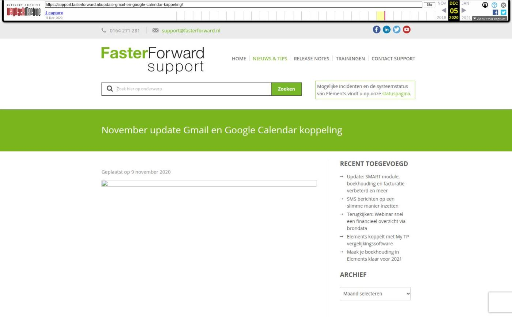

November update Gmail en Google Calendar koppeling

Tekstinhoud
Geplaatst op 9 november 2020
Update november: Onze aanpassingen voor Google Calendar zijn inmiddels goedgekeurd. Deze nieuwe en huidige kantoren/medewerkers kunnen weer accounts aanmaken en de koppeling gebruiken.
Aangepaste voorwaarden Google
Google heeft de instellingen en voorwaarden van gekoppelde applicaties begin 2020 gewijzigd. Hierdoor moet Faster Forward de inrichting van Elements wijzigen. Google moet deze wijzigingen vervolgens goedkeuren.
Dit moet voor februari 2021 ingericht zijn, anders werkt de koppeling van Elements met Gmail mogelijk niet meer na februari 2021.
We zijn druk bezig om dit op te lossen en onze klanten stellen hier terechte vragen over. Bij Faster Forward hebben we begin dit jaar al actie ondernomen. Google is echter een groter bedrijf en moet deze instellingen van vele softwarebedrijven controleren. Het kan daarom een tijdje duren voordat we van hun goedkeuring krijgen.
Om veelgestelde vragen te beantwoorden, geven we in dit artikel een update over de stand van zaken.
Google Calendar
De koppeling, ook wel ‘synchronisatie’ genoemd, met Google Calendar werkt momenteel nog steeds voor de Elements gebruikers die deze voor 2020 al hadden ingesteld.
De koppeling is per november 2020 ook weer in te stellen voor:
Nieuwe kantoren
Nieuwe medewerkers van een kantoor
Medewerkers die hun wachtwoord zijn vergeten
Aanpassingen in Elements
De nieuwe instellingen voor de koppeling met Google Calendar zijn door ons ingericht en door Google goedgekeurd. Faster Forward heeft bijvoorbeeld de onderstaande knop in de huisstijl van Google gezet.
Gmail
Op 9 april 2020 zijn alle Elements gebruikers geïnformeerd over de aflopende ondersteuning van Gmail in combinatie met Elements.
Per 15 juni 2020 is het niet langer mogelijk om nieuwe Gmail e-mailboxen toe te voegen in Elements. Per 15 februari 2021 zullen de bestaande e-mailboxen niet langer worden gesynchroniseerd. Dit komt voornamelijk door de hoge kosten die Google factureert. Lees hier meer over onze beweegredenen.
Wat moet je doen?
Wij raden je aan om tijdig gebruik te maken van een andere aanbieder voor e-mail. Zij kunnen je helpen over te stappen van Gmail. Nadat je bent overgestapt, zetten we (in samenspraak) je e-mail in Elements ook om.
Een greep uit de lijst van aanbieders:
Office365
Yourhosting
MijnDomein
Hostnet
Strato
Antagonist
Categorie: Algemeen